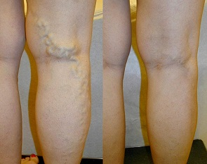

Joanna Mitrosz – wiadoma gimnastyczka artystyczna.
Joanna Mitrosz – wiadoma gimnastyczka artystyczna.
Mistrz świata dala radę pozbyć się problemów z żyliakami w terminie tygodnia. Profesjonalny sposób!
Da się wyleczyć żyliaki nawet jeżeli będziecie uprawiać sport, jeżeli nogi Państwa będą w napięciu caly czas, wiem ze swojego doświadczenia. - podtwierdza Joanna Mitrosz.
Joanna Mitrosz – wiadoma gimnastyczka artystyczna.
Joanna Mitrosz wiadoma polska, mloda gimnastyczka artystyczna, która juz jest wieloktorną Mistrzyną Polski, wielokrotna Mistrzynia Polski, reprezentantka Polski na igrzyskach olimpijskich w Londynie. Joanna Mitrosz najmlodsza gimnastyczka, która zdobyła złoty medal na Mistrzostwach Świata All-around.
- Joanna, to jest Twój rekord, Ty jesteś najmlodszą gimnastyczką, która zdobyła złoty medal na Mistrzostwach Świata All-around.!!! Powiedz nam o swojej pracę.
- Gimnastyka artystyczna – to jest najpiękniejszy sport dla kobiet. Z pewnością mogę powiedzieć, że jest to potrzebuje dużo pracy, musisz wiele szkolić, wykonanie każdego ruchu jest niezwykle trudne. Nie mogę sobie pozwolić powrót do domu, jeżeli nie wypełniłam cały program, którego realizacja nie podoba się treneru. Trenuję się przez około 5-6 godzin dziennie.
- Joanna, Ty trenujesz bardzo dużó. Kiedyś miałaś problemy ze zdrowiem, powiązane z takim dużym obciążeniem?
- Jasne że tak, każde ćwiczenie wpływa na Twoje zdrowie i ciało. Po pół roku treningów, zacząłam cierpieć z powodu żylaków. Moje nogi wyglądały straszne! Lepiej jest nie pamiętać o tym! Moje żyły były spuchnięte i niebieskie, czułam silny ból prawie caly czas!
 Joanna uprawia gimnastykę artystyczną od dzieciństwa (zdjęcie z
osobistego archiwum)
Joanna uprawia gimnastykę artystyczną od dzieciństwa (zdjęcie z
osobistego archiwum)
 I to jest to, do czego doprowadziło mnie w okresie
czasu, że jestem w sporcie (zdjęcie z osobistego archiwum)
I to jest to, do czego doprowadziło mnie w okresie
czasu, że jestem w sporcie (zdjęcie z osobistego archiwum)
- Mogę sobie wyobrazić, jak byś chciała tego się pozbyć!!
- Tak, probowałam wszystko c mogłam! Bardzo drogie zabiegi i leczenie za granicą. I, oczywiście, nie była pomijana nietradycyjna medycyna. Nawet zgodziłam się na operacje, ale w końcu zdecydowałam że nie, bo nie będę mógła wtedy uprawianiać sportu przez długi czas.
- I jakie były suksesy ?
-Nie było żadnych. Na początku, wszystko gdyby było dobrze, jakby wszystko działo się jak trzeba, ale symptomy, które chyba zniknełi, ale wkrótce wszystko wrócilo. Czasami nawet było gorzej. Niestety, nie wiedziałam co robić, nie mógłam trenować, a potem nie mogłam w żaden sposób poprawić sytuację: ...
 Z koleżanką z treningów.
Z koleżanką z treningów.
-A co sądzisz o operacji, która została zrobiona?
- Jak powiedzieć, że to najlepszy sposób z tych, które próbowałam. Było by to dobrą metodą, tylko jeśli to by nic nie kosztowało, ale to jest bardzo kosztowne dla zwykłych ludzi. I oczywiście jest stratą czasu, przez długi czas nie może być treningów. Jest to bardzo kosztowny sposób, nie jest dla każdego. I osobiście, nie mogę przegapić tyle treningów i mistrzostw. Więc po prostu natychmiast musiałabym zakończyć moją karierę sportową. Raz próbowałam, i tyle! A w ogóle, operacja nie rozwiązuje problemu, po prostu ułatwia chorobę od jakiegoś czasu.
- Ale, patrząć na Twoje nogi, mogę domyślieć się, że Ty dałaś radę znałeść rozwiązanie problemy...
- Tak, moja koleżanka pomogła mi. Kiedyś, gdy dała mi pudełko podczas treningu i powiedziała: „Weź kurs leczenia za pomocą tego! Potrzebujemy Cię tutaj, a nie w szpitalu!"
 Wynik po operacji (drugie zdęjcie), wynik po
wykorzystaniu żelu (trzecie zdęjcie).
Wynik po operacji (drugie zdęjcie), wynik po
wykorzystaniu żelu (trzecie zdęjcie).
- Tego wystarczyło, żeby wyleczyć żylaki?!
- Możesz uwierzyć ?! Żel, który mi doradziła koleżanka naprawdę dał radę!

- No i co jest tym sposobem? Powiedz nam tą tajemnicę!
-Tutaj nie ma żadnej tajemnicy! To był profesjonalny żel do leczenia żył , ten japoński produkt to technologia opracowana wspólnie z europejskimi naukowcami. Żel możemy uważać jako najbezpieczniejszy sposób leczenia żylaków przez jego skladniki – oni są wcale naturalne
 Z drużyną narodową w gimnastyce po zawodach
All-around.
Z drużyną narodową w gimnastyce po zawodach
All-around.
- Ty naprawdę zdolałaś problemy z nogami za pomocą tego żelu? Jak on działa ?
- Szczersze mówiąc wykorzystówałam tylko ! (ride, ndr). Ten wspaniały żel zwalcza problem stabilnie, stabilizuje krążenie krwi i łagodzi ciśnienie w żyłach. To pomaga mi bardzo mocno po długim treningu!
Nie wiem wszystkiego o fizjologii, ale ważne jest dla mnie, że dzięki tej śmietanie, pozbyłam się tego problemu! Ale można przeczytać, jeśli chcesz więcej na temat tego produktu na stronie producenta

- Joanna, ile czasu trzeba, aby pozbyć się takich problemów z żyłami? Jak długo powinno się używać ,żeby zobaczyć wynik?
- Trzeba używać dwa razy dziennie: rano i wieczorem przed tym, jak iść spać .
Nie uwierzysz, ale widziałam ulepszenia już 3 dni później! Obrzęk zniknął, a nogi już dobrze wyglądali! Czuję się bardzo dobrze po treningu.
 Joanna Mitrosz
Joanna Mitrosz
- Czyli juz przez 3 dni zobaczyłasz ulepszenie?
- Tak. Jeszcze przez dwa dni zobaczyłam, że żyly juz nie da się zobaczyć na nogach! Teraz mogę spokojnie pracować jako modelka!
- Ile czasu potrzebowałaś, żeby wcale wyleczyć swoje nogi?
- Ja nie liczyłam, ale mniej więcej tydzień. A potem wykorzystowywałam żel jeszcze przez 3-4 dni, bo bałam się, że wyniku już nie będzie
Ale pomyliłam się! Żyly na nogach przestały mnie niepokoić. Zupełnie zapomniałam o tym i rozpocziełam nowe życie! (Uśmiecha się)
 Joanna Mitrosz
Joanna Mitrosz
- Chcesz coś powiedzieć do naszych czytelników ?
- Chciałabym powiedzieć, że skladnikiem tego wspaniałego żelu, który rozwiązyje wszystkie problemy związane z żylakami, nie jest po prostu mieszanina różnych substancji. Fakt, że część skladników jest stworzona przez naukowców za pomocą unikalnej technologii, a także są wyjątkowe. Dlatego uważaj, istnieje wiele podróbek! Ważne jest, aby kupić żel, który przeszedł wszystkie certyfikaty: kupuj go tylko na oficjalnej stronie producenta. Jest to skuteczny produkt z gwarancją jakości i 100% to nie jest fałszywym żelem .
Życzę Ci odnaleźć siebie i dać radę z tym strasznym problem żylaków! Wszystko będzie dobrze, najważniejsze, aby uwierzyć! Najlepszą nagrodą jest to że będziesz czuć się dobrze. Jak dobrze obudzić się w dobrym nastroju. A najważniejszą rzeczą jest, aby zrozumieć, że da się zrobisz to samodzielnie!
Mam nadzieje, że moje doświadczenie pomoże Państwu i da śily, żeby pokonać chorobę! Życzę wszystkim powodzenia w walce z żylakami!
2020
Komentarze
Cześć Joanna, Ty jesteś niesamowitąkobietą i bardzo utalentowaną gimnastyczką! Twoja historia zmotywowała mnie! Mam te same problemy z żyłami w obu nogach, ale jestem coraz bardziej zaniepokojona moją prawą nogą: od pachwiny do kolana boli i staje się nie do zniesienia, nawet w godzinach wieczornych. A przecież ja jeszcze nie zapisałam się do lekarza, chcę spróbować leczyć się sama. Napiszę później, powiem Ci jak się sprawy mam
Dzięki , Joanna! Wczoraj otrzymałam swoją paczkę. Wszystko jest dobrze. Teraz zacznę używać. Oczekiwam na wyniki w ciągu 5 dni!
Trzeba nosić buty bez obcasów lub ewentualnie na małym obcasie. Problemy z żyłami są ze względu na wysokie obcasy! Wystarczy tylko pomyśleć o tym, przed tym jak kupić fajne buty, a potem narzekać na chrore i straszliwe nogi.
Hej, Joanna! Ja zamówiłam żel.
nie mogę doczekać się kiedy otrzymam swoją paczkę! :)
Moja córka przywizła mi ten żel z Japonii, 5 lat temu, nic nowego!
Fajnie! Ja już zamówiłam i rozpoczęłam używać. Za kilka dni powiem jakie są wyniki.
Leki nie sąnowe, wszyscy wiedzą o tym żelie. 2 lata temu moja matka rozwiązała wszustkie swoje problemy z żylami dzięki temu żelu
W stanach już 5 łat używamy tego żelu. Kolieżanki z pracy są podobne do gwiazd Hollywoodu!
Dzień dobry... używam żel już 3 dni i nawet nie wiem jak podziękować! Dzięki Joanna! Moje nogi są jak nowe!!!
Używam żel tylko 4 dni i już widzę, że mam dobre wyniki! Teraz moje nogi są o wiele bardzej piękne! Jestem szczęśliwa!
Kupiłam żel, i kocham go! To był tylko tydzień użycia i wszystko już jest o wiele lepiej. Kto by pomyślał, na pewno się nie spodziewałam ... biorąc pod uwagę jego koszt, jest to po prostu dar.
Joanna, ja wiedziałam o tym żelie, kupiłam go kiedyś dawno dawno temu w Chinach. Problem z żylami po prostu zniknął, jest niesamowity, fajnie, co? Polecam wszystcym!!!!
Mój mąż jest mega zadowolony! Mówi że mam uczesnicić w konkursie „Miss piękne nogi”, co hah
działa, ja zamówiłam na ofjcjanej stronie, bez zapłaty, a paczka przybyła do mnie w ciągu 6 dni. Żyly po prostu zniknąłi tydzień później.
Ja nie jestem jedna! Ja podolałam problem z żylami tylko w terminie tygodnia. Coś … jeszcze nie mogę w to uwierzyć :-D
Nogi teraz nie bolą i są mega piękne!! Super! Polecam dla wszystkich kobiet!
ja również wiem o . Moja ciocia więcej nie mówi że jej okropnie bolą nogi (-;
Cześć! Ten żel jest najlepszy, byłam zmuszona czekać tylko tydzień żeby pozbyć się problemów z żylami .
Po prostu super! Moje nogi teraz są zdrowe i piękne! Paczkę czekałam tylko 3 dni.
Dzień dobry, kobietki! Moja żona kupiła ten żel i jej nogi teraz są bardzo piękne! Są idealne nawet! Nie mogę powiedzieć jaki jestem szczęśliwy, tego nie da się opisać! Polecam!
nie nowego ! Każda kobieta wie o tym żelie: a jeżeli jakaś nie wie, to po prostu nie chcę pozbyć się tego problemu.
Dzięki za artykul, Joanna jestes najlepsza! Mam nadzieje że Twoja kariera sportowa będzie udana! Pójdę zamówiać żel .
To wszystko co bym chciała! Wszystkie będą zazdrosne!
W Chinach wszyscy wykorzystują ten żel i pomaga bardzo dobrze! A tutaj jak zawsze jako ostatnie dowiadujemy się o wszystkim, czekamy kilka lat żeby w końcu otrzymać leki...